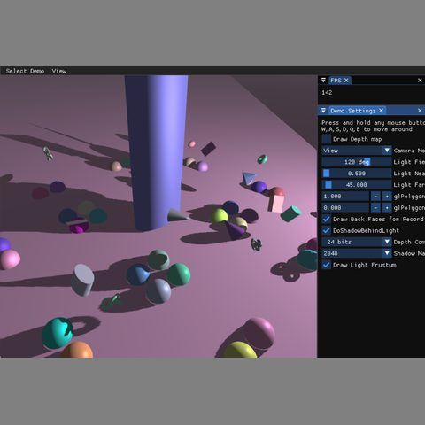

3D Graphics

This project implements shadow mapping for an interactive OpenGL graphics demo. The scene is rendered from the perspective of a light source to generate a depth map, and that depth map is then used during the main rendering pass to determine whether visible fragments are lit or in shadow. The demo also includes debugging tools such as shadow map visualization and light frustum rendering.
The goal of this assignment was to integrate framebuffer rendering, depth textures, camera transformations, shader-based depth comparison, and exponential fog into a complete real-time graphics demo.
textureProj.The most challenging part of this project was keeping the coordinate spaces consistent between the camera view, light view, projection space, and shadow texture space. Shadow mapping depends heavily on correct matrix order, so small mistakes in the view matrix, projection matrix, or shadow bias matrix can cause the shadow map lookup to fail.
Another important challenge was framebuffer setup. The depth texture needed the correct internal format, comparison mode, wrapping behavior, and filtering settings to work correctly as a shadow map. Debugging the depth texture visualization helped confirm that the light-space depth pass was being rendered correctly.
This assignment helped me better understand how real-time shadows are produced using multiple render passes. It also showed how framebuffers, textures, cameras, and shaders work together as a full graphics pipeline rather than as isolated systems.